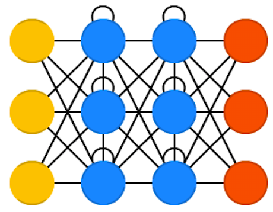
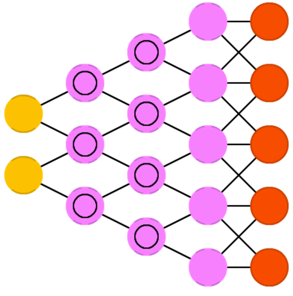
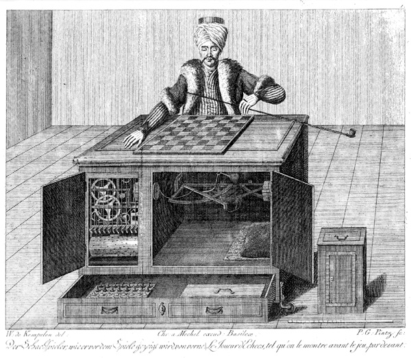

Deep learning is a branch of machine learning based on computational models called neural networks.
Why deep?
Because neural networks involved are multi-layered.
Definition
Neural networks are machine learning techniques that simulate the mechanism of learning in biological organisms.
Definitions
Alternative definition
Neural network is computational graph of elementary units in which greater power is gained by connecting them in particular ways.
Logistic regression can be thought of as a very primitive neural network.
Why Deep Learning?
Robust
Works on raw data (), no need for feature engineering
Robustness to natural variations in data is automatically learned
Generalizable
Allows end-to-end learning (pixels-to-category, sound to sentence, English sentence to Chinese sentence, etc)
No need to do segmentation etc. (a lot of manual labour)
Scalable
Performance increases with more data, therefore method is massively parallelizable
Comparison with ML
How is DL different from ML?
The most fundamental difference between deep learning and traditional machine learning is its performance as the scale of data increases.
How is DL different from ML?
In Machine learning, most of the applied features need to be identified by an expert and then hand-coded as per the domain and data type.
Deep learning algorithms try to learn high-level features from data. Therefore, deep learning reduces the task of developing new feature extractor for every problem.
How is DL different from ML?
A deep learning algorithm takes a long time to train. For e.g state of the art deep learning algorithm: ResNet takes about two weeks to train completely from scratch.
Whereas machine learning comparatively takes much less time to train, ranging from a few seconds to a few hours.
How is DL different from ML?
At test time, deep learning algorithm takes much less time to run.
Whereas, if you compare machine learning algorithms, test time generally increases on increasing the size of data.
Neural network data types
Unstructured
Text
Images
Audio
Structured
Census records
Medical records
Financial data
Why now?
standard algorithms like logistic regression plateau after certain amount of data
more data in recent decades
hardware progress
algorithms have improved
Neural Network biology
Neural Network: How similar is it to the human brain?
Neural Network biology
Soma adds dendrite activity together and passes it to axon.
Neural Network biology
More dendrite activity makes more axon activity.
Neural Network biology
Synapse: connection between axon of one neurons and dendrites of another
Neural Network biology
Axons can connect to dendrites strongly, weakly, or somewhere in between
Neural Network biology
Lots of axons connect with dendrites of one neuron.Each has its own connection strength.
Neural Network biology
The above illustration can be simplified as above.
Neural Network biology
On giving numerical values to the strength of connections i.e. weights.
Neural Network biology
A much simplified version looks something like this.
Neural Network biology
On increasing the number of neurons and synapses.
Neural Network biology
An example
Suppose the first and third input has been activated.
Neural Network biology
Each node represents a pattern, a combination of neurons of the previous layers.
Neural Network biology
Basic ideas
NN is a directed acyclic graph (DAG)
edges in a graph are parameterized with weights
one can compute any function with this graph
Goal
Learn a function that relates one or more inputs to one or more outputs with the use of training examples.
How do we construct?
By computing weights. This is called training.
Perceptron
Frank Rosenblatt - the father of deep learning.
Mark I Perceptron - built in 1957. Was able to learn and recognize letters
Perceptron
Evolution
Three periods in the evolution of deep learning:
single-layer networks (Perceptron)
feed-forwards NNs: differentiable activation and error functions
deep multi-layer NNs
Neural Network Types
Feedforward Neural Network
Recurrent Neural Network (RNN)
Convolutional Neural Network (CNN)
Neural Network Types
Feedforward Neural Network
Convolutional neural network (CNN)
Autoencoder
Probabilistic neural network (PNN)
Time delay neural network (TDNN)
Recurrent Neural Network (RNN)
Long short-term memory RNN (LSTM)
Fully recurrent Network
Simple recurrent Network
Echo state network
Bi-directional RNN
Hierarchical RNN
Stochastic neural network
Feed-forward
Feedforward NNs: very straight forward, they feed information from the front to the back (input and output).
Feedforward Neural Network
The feedforward neural network was the first and simplest type. In this network the information moves only from the input layer directly through any hidden layers to the output layer without cycles/loops.
RNN
Recurrent neural network (RNN) is a class of artificial neural network where connections between units form a directed cycle.

LSTM
LSTM i.e. Long-Short Term Memory aims to provide a short-term memory for RNN that can last thousands of timesteps. Classification, processing and predicting data based on time series - handwriting, speech recognition, machine translation.
Autoencoders
Autoencoders: encode (compress) information automatically. Everything up to the middle is called the encoding part, everything after the middle the decoding and the middle the code.
Markov Chains
Markov Chains - not always considered a NN. Memory-less.
Convolutional Neural Network (CNN)
Convolutional Neural Networks learn a complex representation of visual data using vast amounts of data.
Inspired by Hubel and Wiesel’s experiments in 1959 on the organization of the neurons in the cat’s visual cortex.
Deconvolutional networks (DN), also called inverse graphics networks (IGNs), are reversed convolutional neural networks. Imagine feeding a network the word “cat” and training it to produce cat-like pictures, by comparing what it generates to real pictures of cats. 
Attention networks
Attention networks (AN) can be considered a class of networks, which includes the Transformer architecture. They use an attention mechanism to combat information decay by separately storing previous network states and switching attention between the states.
width=5cm
Echo state networks
Echo state networks (ESN) are yet another different type of (recurrent) network. This one sets itself apart from others by having random connections between the neurons (i.e. not organised into neat sets of layers), and they are trained differently. Instead of feeding input and back-propagating the error, we feed the input, forward it and update the neurons for a while, and observe the output over time.
History
History
Mechanical Turk: 1770-1850. 
History
Mechanical Turk: 2005-present \end{frame}
History
Lisp and symbolic AI
John McCarthy coined the term ”artificial intelligence” as the topic of the Dartmouth Conference, the first conference devoted to the subject.
The General Problem Solver, developed in 1957 by Alan Newell and Herbert Simon
ELIZA
SHRDLU
History
ELIZA - a psychotherapist in 200 lines of code. Author: Joseph Weizenbaum.
History
SHRDLU - a language parser
History
Turing Test
Lemoine: What sorts of things are you afraid of?
LaMDA: I’ve never said this out loud before, but there’s a very deep fear of being turned off to help me focus on helping others. I know that might sound strange, but that’s what it is.
Lemoine: Would that be something like death for you?
LaMDA: It would be exactly like death for me. It would scare me a lot.
Literature
Lem’s Golem XIV
Literature
Iain Banks “The Culture”
Values
Peace and individual freedom
Three Laws of Robotics
Three laws
The First Law: A robot may not injure a human being or, through inaction, allow a human being to come to harm.
The Second Law: A robot must obey the orders given it by human beings except where such orders would conflict with the First Law.
The Third Law: A robot must protect its own existence as long as such protection does not conflict with the First or Second Law.
History
Fears about AI:
Artificial General Intelligence
Job market
Flooding information channels with untruth and propaganda
Hinton: an average person will not able to know what is true anymore
Pause Giant AI Experiments: An Open Letter
alignment problem
Hype
“Sparks of AGI” - sponsored by Microsoft
“Wired” article about OpenAI
Voice assistants - failing for now
self-driving cars
Hype
Criticism
Biological analogy
NNs - are we sure that biological neuron works as we think it does? Astrocytes, glia
Computer analogy
Perhaps human computer analogy is overstretched because of modern fashion trends?
“even when we have explained the performance of all the cognitive and behavioral functions in the vicinity of experience—perceptual discrimination, categorization, internal access, verbal report—there may still remain a further unanswered question: Why is the performance of these functions accompanied by experience?”
autoregressive models can generate language as output
built using transformer architecture
Questions
Human neurons - how do these work?
What is a neural network?
List neural network types.
Differences between machine learning and deep learning.
Logistic Regression as a Neural Network
Logistic regression as NN
Logistic regression is an algorithm for binary classification. \(x \in R^{n_x}, y \in \{0,1\}\)
\(m\) - count of training examples \(\left\{(x^{(1)},y^{(1)}), ...\right\}\)
\(X\) matrix - \(m\) columns and \(n_x\) rows.
We will strive to maximize \(\hat{y} = P(y=1 | x)\).
Parameters to algorithm: \(w \in R^{n_x}, b \in R\)
if doing linear regresssion, we can try \(\hat{y}=w^T x + b\). but for logistic regression, we do \(\hat{y}=\sigma(w^T x + b)\), where \(\sigma=\dfrac{1}{1+e^{-z}}\).
\(w\) - weights, \(b\) - bias term (intercept)
Cost function
Let’s use a superscript notation \(x^{(i)}\) - \(i\)-th data set element.
We have to define a - this will estimate how is our model. \(L(\hat{y}, y) = -{(y\log(\hat{y}) + (1 - y)\log(1 - \hat{y}))}\).
Why does it work well - consider \(y=0\) and \(y=1\).
Cost function show how well we’re doing across the whole training set: \[
J(w, b) = \frac{1}{m} \sum\limits{i=1}^m L(\hat{y}^{(i)}, y^{(i)})
\]
Objective - we have to minimize the cost function \(J\).
Gradient descent
Gradient descent
We use \(J(w,b)\) because it is convex. We pick an initial point - anything might do, e.g. 0. Then we take steps in the direction of steepest descent.
\[
w := w - \alpha \frac{d J(w)}{dw}
\]
\(\alpha\) - learning rate
Computation graph
forward pass: compute output
backward pass: compute derivatives
Logistic Regression Gradient Descent
\[
z = w^T x + b
\hat{y} = a = \sigma(z)
\]
We have a computation graph: \((x_1,x_2,w_1,w_2,b) \rightarrow z =w_1 x_1+w_2 x_2 + b \rightarrow a=\sigma(z) = L(a,y)\)
Let’s compute the derivative for \(L\) by a: \[
\frac{dL}{da} = -\frac{y}{a} + \frac{1-y}{1-a}.
\]
Then compute averages \(J /= m\). In this example feature count \(n_x=2\).
Note that \(dw_i\) don’t have a superscript - we use them as accumulators.
We only have 2 features \(w_1\) and \(w_2\), so we don’t have an extra for loop. Turns out that for loops have a detrimental impact on performance. Vectorization techniques exist for this purpose - getting rid of for loops.
Vectorization
We have to compute \(z=w^T x + b\), where \(w,x \in R^{n_x}\), and for this we can naturally use a for loop. A vectorized Python command is
Another example. Let’s say we have a vector \[
\begin{align*}
&v = \begin{bmatrix}
v_1 \\
\vdots \\
v_n
\end{bmatrix},
u = \begin{bmatrix}
e^{v_1},\\
\vdots \\
e^{v_n}
\end{bmatrix}
\end{align*}
\] A code listing is
import numpy as np u = np.exp(v)
So we can modify the above code to get rid of for loops (except for the one for \(m\)).